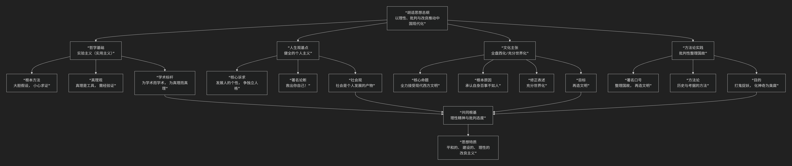

胡适之
基于胡适之核心思想
胡适是中国近代思想史上一位开风气之先的关键人物。他的核心思想可以概括为：一套以“实验主义”为哲学基础，以“健全的个人主义”为出发点，以“批判性整理国故”和“全盘西化（充分世界化）”为路径，致力于推动中国思想、学术和社会现代化的理性改良主义体系。
胡适的思想清晰、务实且一以贯之，其核心架构与内在逻辑可以通过下图清晰地展现：

以下，我们将沿此逻辑脉络，深入解析胡适思想的核心要义。
一、哲学基础：实验主义
胡适在美国哥伦比亚大学师从杜威，所接受的 实验主义 是其全部思想的哲学基石。
核心方法：“大胆的假设，小心的求证”。他认为这是科学方法的精髓，也应应用于一切人文和社会研究。假设要勇敢，但验证必须严格基于证据。
真理观：真理并非一成不变的教条，而是 一种有用的假设，需要在实际运用中不断检验和修正。“真理不过是对付环境的一种工具。”
学术精神：提倡 “为学术而学术”、“为真理而真理” 的纯粹研究态度，反对学术为政治或道德做奴仆。
二、人生观基点：健全的个人主义
针对中国传统的家族本位，胡适提出了“健全的个人主义”作为现代人格的基石。
核心主张：社会进步的基础在于 一个个独立的、自由的、健全的个人。首先要“救出你自己！”（易卜生主义），发展自己的个性，拥有独立判断的能力。
著名论断：“争你们个人的自由，便是为国家争自由！争你们自己的人格，便是为国家争人格！自由平等的国家不是一群奴才建造得起来的！”
社会观：社会是个人发展的产物，“小我” （个人）应对其言行负责，并汇入 “大我” （社会历史）的洪流中，从而获得不朽的意义。
三、文化主张：全盘西化 / 充分世界化
这是胡适最受争议也最核心的文化观，其本质是激进的现代化主张。
核心命题：中国要摆脱落后挨打的局面，必须 “死心塌地的去学人家”，即全力接受现代的西洋文明。
著名口号与修正：他最初提出 “全盘西化” ，意在矫枉过正，打破“中体西用”的折衷幻想。后因批评过多，修正为更准确的 “充分世界化”。
根本原因：基于深刻的 文化自省。他承认中国在 “物质机械、政治制度、道德、文学、音乐、艺术、体育” 等几乎所有方面都不如人，故需虚心学习。
最终目标：“再造文明”。学习西方不是目的，而是手段，最终目标是吸收新知，批判传统，创造一种属于现代中国的新文明。
四、方法论实践：批判性整理国故
与“全盘西化”看似矛盾实则互补的，是他对传统文化的“整理国故”运动。
目的：“整理国故，再造文明”。不是盲目标榜国学，而是用 批判的眼光 和 科学的方法 （实验主义与考据学结合）去重新研究传统。
方法：“用历史的方法来尽量扩大研究的范围”，即考据版本、辨明真伪、理清脉络。
著名比喻：整理国故是为了 “打鬼”、“捉妖” ，即 “化神奇为臭腐”，揭开传统文化的神秘面纱，用理性态度看清其本来面目，有价值的发扬，无价值的抛弃。
五、核心要义总结
理论维度 |
核心命题 |
关键概念与贡献 |
|---|---|---|
哲学方法论 |
以”实验主义”为指导，倡导”大胆假设，小心求证”的科学精神。 |
实验主义、实用主义、科学方法、拿证据来 |
社会人生观 |
提倡”健全的个人主义”，认为自由国家非奴才所能建成。 |
救出你自己、易卜生主义、小我与大我 |
文化观 |
主张”充分世界化”，认为中国应全力学习现代西方文明。 |
全盘西化、充分世界化、百事不如人、再造文明 |
学术实践 |
以”批判态度整理国故”，目的是”打鬼捉妖，再造文明”。 |
整理国故、疑古、考据学、再造文明 |
六、思想特质与历史影响
理性与平和：他一生秉持理性、宽容、怀疑和批判的态度，反对任何形式的激进主义、盲从和武断。
改良主义：他坚信“一点一滴的改造”、“一尺一步的进步”，反对根本性的革命，主张通过教育、文化和制度的渐进改革来塑造新中国。
深远影响：
新文化运动旗手：提倡白话文，推动文学革命，其《文学改良刍议》是标志性文献。
思想启蒙导师：影响了一代又一代中国知识分子，塑造了现代中国的理性精神。
自由主义的代表人物：终生坚持自由、民主、人权的普世价值。
争议与批评：
其改良主义被批评为无法应对中国的紧迫危机。
“全盘西化”论被指责为 民族虚无主义。
在阶级斗争激烈的年代，其自由主义立场显得“不合时宜”。
七、总结
总而言之，胡适的核心思想在于，他是一位 “理性的播种者”和“现代的工程师” 。他教导我们，面对积贫积弱的祖国，最需要的不是激情的呐喊，而是冷静的思考；不是笼统的主义，而是具体的办法；不是固守传统的“光荣”，而是承认落后的勇气和虚心学习的胸怀。
他的全部工作是对 中国如何实现现代化 的一次全面而系统的思想启蒙。在充满激荡与革命的20世纪，他始终坚守理性、自由和渐进的改良道路，试图为中国打造一个坚实的“现代性”基础。尽管他的方案常被视为“迂缓”，但他所倡导的怀疑精神、批判态度、科学方法和个人尊严，已成为中国现代思想宝库中不可或缺的遗产。在这个意义上，胡适不仅是历史人物，更是一种永恒的理性声音。